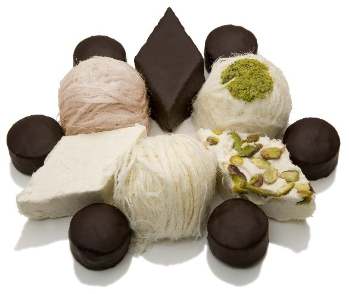
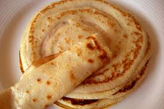
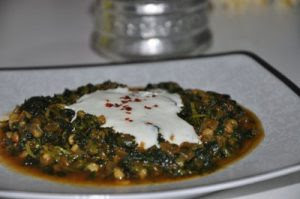
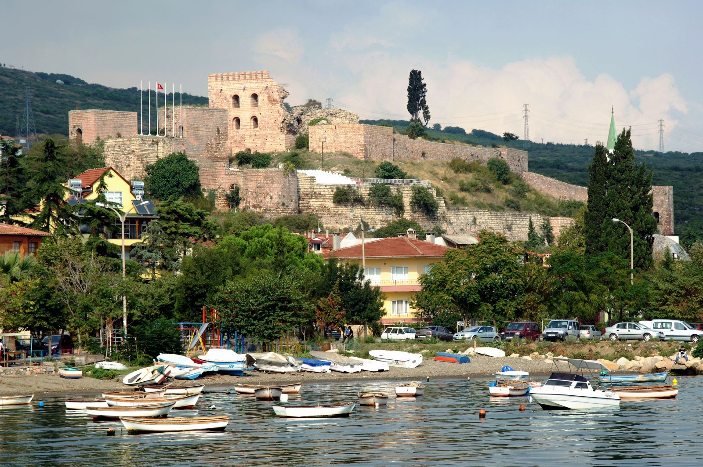

Şehrim: Kocaeli
Kocaeli Hakkında
Nüfus: 2.192.388
Kocaeli, Türkiye'nin Marmara bölgesinde yer alan illerimizdendir. Kocaeli gelişmiş sanayi şehri olarak bilinse de eşsiz doğal güzelliklere sahiptir. Şehrin farklı köşelerinde, sakinlik arayanlar ya da güzel manzaralar yakalamak isteyenler için keşfedilecek birçok yer bulunur.Sapanca Gölü kıyısındaki Eşme, huzurlu atmosferiyle öne çıkar. Göl manzarası, sade iskeleleri ve doğayla iç içe yapısı sayesinde burada zaman daha sakin akıyormuş gibi hissedilir.Doğal güzellikleriyle bilinen Maşukiye ise yemyeşil doğası ve akan sularıyla dikkat çeker. Her mevsimde farklı bir güzelliğe bürünen bu bölge, hem dinlenmek hem de doğayı yakından hissetmek isteyenler için ideal bir duraktır.Biraz daha farklı bir deneyim arayanlar için Ormanya Doğal Yaşam Parkı oldukça etkileyici bir alan sunar. Doğal yaşamın korunduğu bu geniş park, özellikle mimarisiyle dikkat çeken Hobbit evleriyle ziyaretçilerine farklı bir atmosfer yaşatır.Karadeniz kıyısında yer alan Kandıra ve Pembe Kayalar ise doğanın gücünü ve estetiğini bir arada gösterir. Özellikle gün batımında ortaya çıkan renkler, burayı oldukça etkileyici kılar.Şehrin merkeze daha yakın bir alanda huzur bulmak için Sekapark iyi bir seçenektir. Deniz kenarındaki yürüyüş yolları, yeşil alanları ve düzenli yapısıyla şehir hayatına keyifli bir mola sunar.Kocaeli daha birçok doğal güzelliğe sahiptir.
Kocaeli sadece doğal güzellikleriyle değil, mutfağıyla da dikkat çeker. Karadeniz ve Marmara kültürünün birleştiği bu şehirde, hem pratik hem de lezzetli birçok yöresel tat öne çıkar. Bunların başında Pişmaniye gelir. İnce ince tel haline getirilen bu geleneksel tatlı, özellikle Kocaeli ile özdeşleşmiştir ve şehre gelenlerin en çok tercih ettiği lezzetlerden biridir.Yörede sıkça yapılan Cızlama, kahvaltılarda tüketilen, yumuşak dokulu ve oldukça doyurucu bir hamur işidir. Sade haliyle ya da peynirle birlikte servis edilir.Bir diğer dikkat çeken lezzet ise Mancar yemeğidir. Doğadan toplanan otlarla hazırlanan bu yemek, bölgenin doğal ve sağlıklı mutfak kültürünü yansıtır.Et yemekleri arasında ise Hindi dolması öne çıkar. Özellikle özel günlerde yapılan bu yemek, Kocaeli mutfağının geleneksel yönünü temsil eder.Tatlı olarak ise Kabak tatlısı, tahin ve cevizle birlikte sunularak bölgede oldukça sevilen bir lezzet haline gelmiştir.
Kocaeli, tarih boyunca farklı medeniyetlere ev sahipliği yapmış olmasıyla oldukça zengin ve çok katmanlı bir kültüre sahiptir. Bu çeşitlilik, hem günlük yaşamda hem de geleneklerde kendini açıkça hissettirir.Köy yaşamında hâlâ sürdürülen dayanışma kültürü dikkat çeker. İmece usulü yardımlaşma, düğünler, bayramlar ve diğer özel günlerde insanların bir araya gelmesi, Kocaeli’nin sosyal yapısının önemli bir parçasıdır.Bölgede önemli bir yere sahip olan Manav kültürü, Kocaeli’nin yerli halkını temsil eder. Kendine özgü şive, gelenekler ve yaşam tarzıyla bu kültür, şehrin kimliğini oluşturan temel unsurlardan biridir.Halk oyunlarında ise Karadeniz ve Marmara etkisi bir arada görülür. Hareketli ve ritmik oyunlarla daha ağır figürlerin birleşmesi, kültürel çeşitliliğin güzel bir yansımasıdır.Kocaeli’de düzenlenen festivaller de kültürel yaşamın canlı kalmasını sağlar. Özellikle yerel ürünlerin tanıtıldığı ve geleneklerin yaşatıldığı etkinlikler, hem şehir halkını hem de ziyaretçileri bir araya getirir.El sanatları açısından bakıldığında dokumacılık, sepet örücülüğü ve ahşap işleri gibi geleneksel üretimler öne çıkar. Bu zanaatlar günümüzde daha sınırlı olsa da, kültürel mirasın önemli bir parçası olarak varlığını sürdürmektedir.Kocaeli kültürü, farklı bölgelerin etkisini taşıyan ancak kendine özgü bir denge kurmuş yapısıyla dikkat çeker. Bu yönüyle şehir, sadece gezilecek değil, aynı zamanda hissedilecek bir kültürel zenginlik sunar.

Maşukiye

Eşme

Ormanya

Pembe Kayalar

Seka

Pişmaniye

Cızlama

Mancar Yemeği

Hindi Dolması

Kabak Tatlısı
Eskihisar Kalesi
Kocaeli’nin Gebze ilçesinde, Marmara Denizi’nin kıyısında tüm heybetiyle yükselen Eskihisar Kalesi, bin yıla yaklaşan köklü geçmişiyle bölgenin en önemli tarihi sembollerinden biri olma özelliğini taşımaktadır; zira bu görkemli yapı, stratejik konumu sayesinde asırlar boyunca İzmit Körfezi’nin güney geçiş güzergahlarını ve deniz trafiğini denetleyen hayati bir savunma karakolu olarak hizmet vermiştir. Yapı üzerinde orijinal bir inşa kitabesi günümüze ulaşmamış olsa da, kalenin mimari dokusunda kullanılan taş işçiliği ve yapı teknikleri, uzmanlar tarafından Bizans İmparatorluğu'nun en parlak dönemlerinden biri olan Komnenos Hanedanı (1081-1185) zamanında inşa edildiğine dair çok güçlü bir kanıt olarak kabul edilmektedir. Yazılı tarih sahnesindeki ilk belirgin izlerine 1241 yılında Bizanslı meşhur tarihçi Georgios Akropolites’in notlarında rastlanan kale, özellikle Osmanlı Devleti ile Bizans İmparatorluğu arasındaki askeri dengeleri değiştiren Palekanon Savaşı sırasındaki stratejik rolü sayesinde tarih kitaplarında silinmez bir iz bırakmıştır. Günümüzde yapılan titiz restorasyon çalışmalarıyla tarihsel dokusu korunarak bir cazibe merkezine dönüştürülen bu antik yapı, sadece askeri bir miras olarak kalmayıp; özellikle antre bölümünde gerçekleştirilen yüksek akustiğe sahip konserler, tiyatro gösterileri ve çeşitli sanatsal organizasyonlarla tarihle sanatın iç içe geçtiği yaşayan bir platform olma özelliğini sürdürmektedir.
